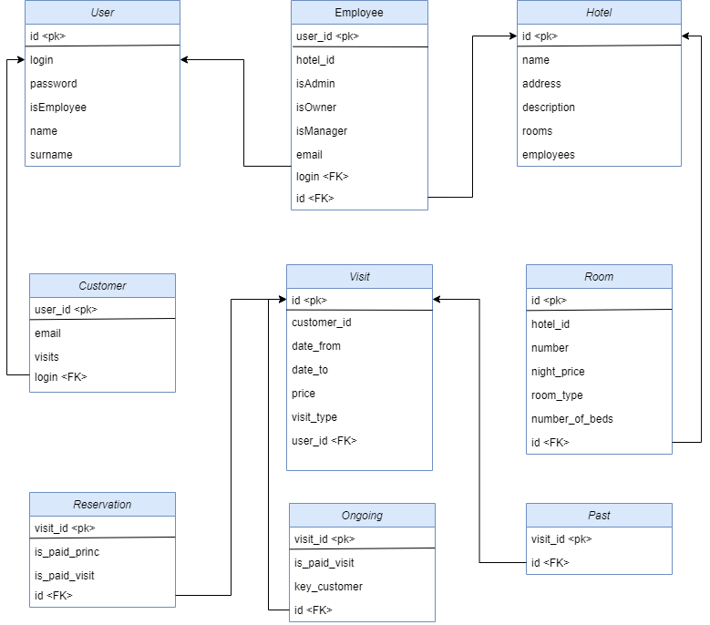

Hotel: rezervace a správa ubytování
- Autoři
- Daniel Pátek xpatek08@stud.fit.vutbr.cz - Python implementace, datábázový subsystém, TODO
- Daniel Čechák xcecha06@stud.fit.vutbr.cz - uživatelské rozhraní, TODO
- Unensanaa Tumenjargal xtumen01@stud.fit.vutbr.cz - uživatelské rohraní, dokumentace
URL aplikace
https://iis-project-hotels.herokuapp.com/
Uživatelé systému pro testování
Uveďte prosím existující zástupce všech rolí uživatelů.
| Login | Heslo | Role |
|---|
| admin | admin | Administrátor |
| owner | TODO | Vlastník |
| manager | TODO | Recepční |
| TODO | TODO | Zákazník |
Implementace
Stručná dokumentace k implementaci, která popisuje, které části projektu (např. PHP skripty) implementují jednotlivé případy použití.
Databáze
Zde vložte grafické schéma relační databáze (tabulek v databázi).

Instalace
- Je potřeba mít nainstalovaný python verze alespoň 3 a pomocí pip nainstalovat flask, sql-alchemy
Requirements:
- click==7.1.2
- dnspython==2.0.0
- email-validator==1.1.2
- Flask==1.1.2
- Flask-Login==0.5.0
- Flask-SQLAlchemy==2.4.4
- Flask-WTF==0.14.3
- gunicorn==20.0.4
- idna==2.10
- Jinja2==2.11.2
- itsdangerous==1.1.0
- MarkupSafe==1.1.1
- python-dotenv==0.15.0
- SQLAlchemy==1.3.20
- Werkzeug==1.0.1
- WTForms==2.3.3
- wtforms-recaptcha==0.3.2
- psycopg2==2.8.6
Známé problémy
Zde popište, které body zadání nejsou implementovány a z jakého důvodu. Např. „Z časových důvodů nebyla implementována správa uživatelů.” Pomůžete tím zrychlit hodnocení, když neimplementované funkce nebudeme muset dlouze hledat.